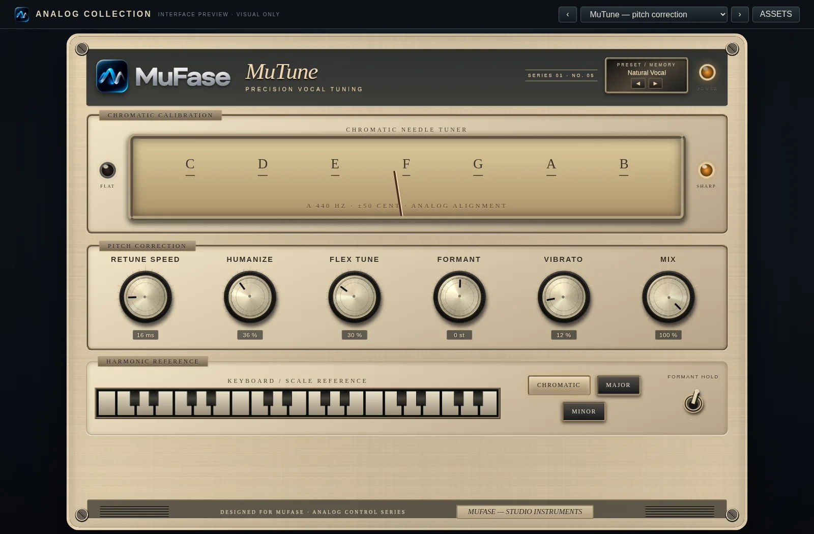

Tono / 05 DE 15
MuTune
Afinación — Corrección de altura tonal.
Detecta y corrige desviaciones de afinación en material monofónico para acercarlo a las notas de una escala.

¿Qué hace?
Seguimiento de frecuencia fundamental y ajuste de pitch hacia notas objetivo.
Controles principales
Key / ScaleEstablece tonalidad y escala.
Retune speedVelocidad de corrección.
HumanizeReduce corrección en notas sostenidas.
AmountIntensidad de la corrección.
Aplicación habitual: Afinación de voces principales o melodías monofónicas, con un efecto sutil o marcado.